Overview
For this homework, we implemented Bezier Curves and Surfaces using de Casteljau's algorithm as well as various triangle meshes and data
structures such as Area-Weighted Vertex Normals, Edge Flip, Edge Split and Loop Subdivision for Mesh Upsampling.
Section I: Bezier Curves and Surfaces
Part 1: Bezier Curves with 1D de Casteljau Subdivision
Briefly explain de Casteljau's algorithm and how you implemented it in order to evaluate Bezier curves.
De Casteljau's algorithm can be explained in a few steps. Given a set of control points, we want to recursively
performs linear interpolations between these control points. For each pair of control points, we control the parameter 't'
to determine the position of the curve. This process is recursively repeated until one point is left, which represents a point
on the Bezier curve in relation to 't'.
This is implemented in evaluate step, whereby we iteratively calculate the 'midpoint' between each set of points in evaluateStep
until one points remains.
Take a look at the provided .bzc files and create your own Bezier curve with 6 control points of your choosing. Use this Bezier curve for your screenshots below.
Show screenshots of each step / level of the evaluation from the original control points down to the final evaluated point. Press E to step through. Toggle C to show the completed Bezier curve as well.
<
Screenshots of each evaluation step
|
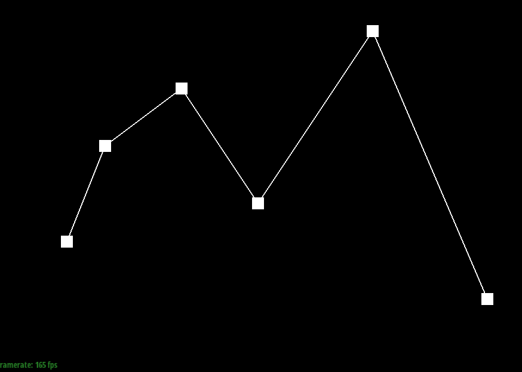
Step 1
|
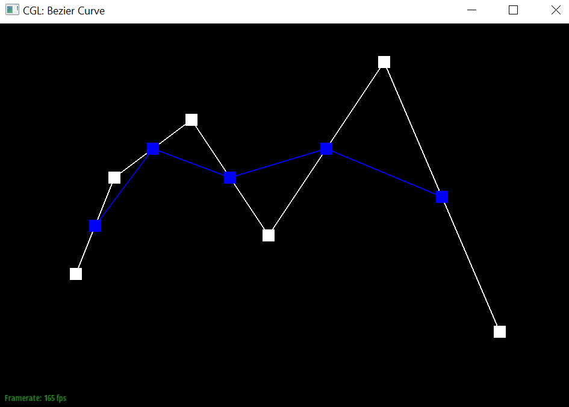
Step 2
|
|
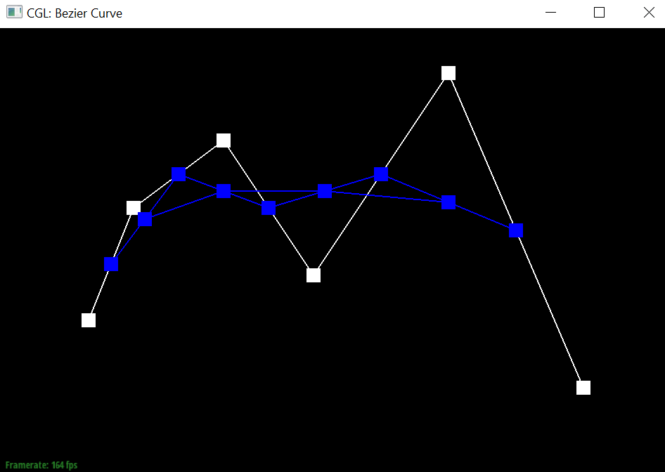
Step 3
|
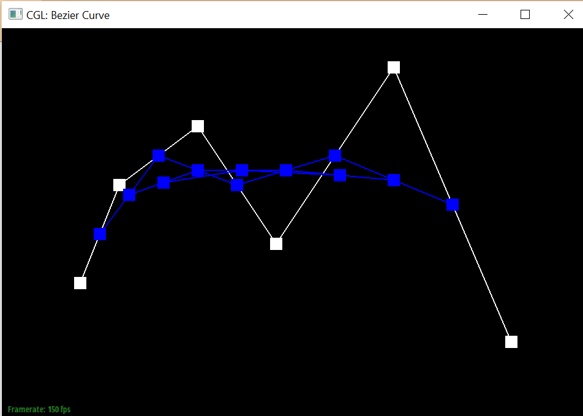
Step 4
|
|
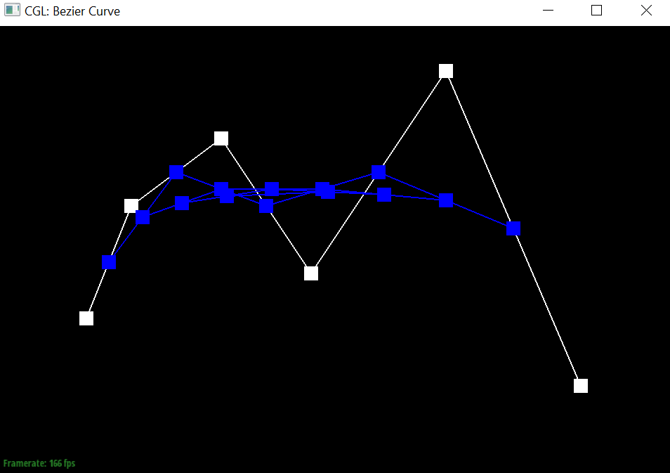
Step 5
|
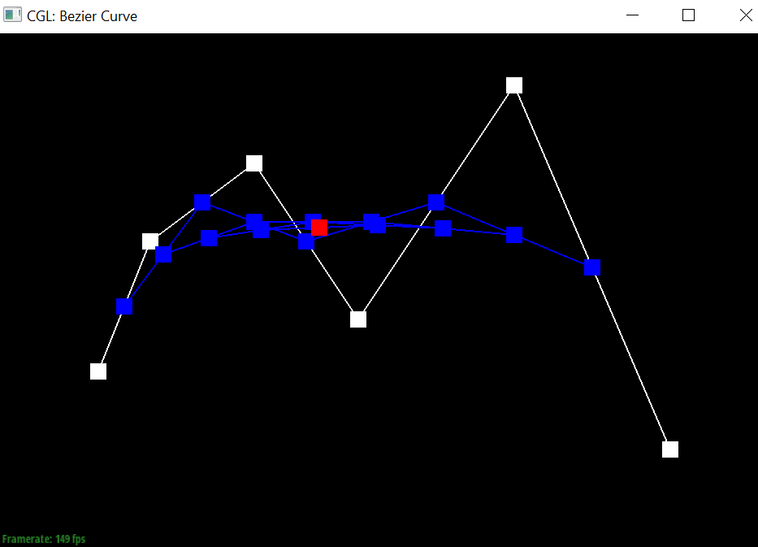
Step 6
|
Final Bezier Curve
Show a screenshot of a slightly different Bezier curve by moving the original control points around and modifying the parameter \(t\) via mouse scrolling.
Slightly different Bezier Curve
|
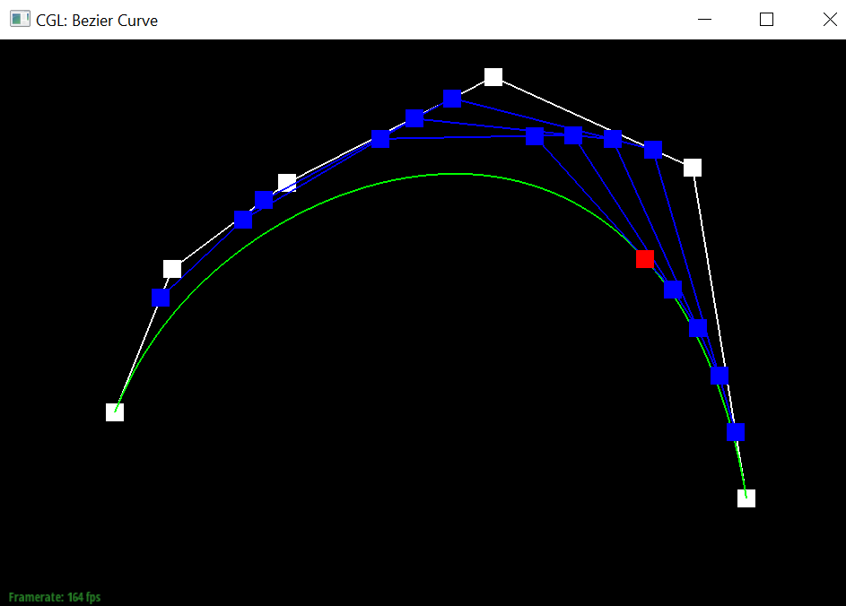
Slightly different Bezier Curve
|
Part 2: Bezier Surfaces with Separable 1D de Casteljau
Briefly explain how de Casteljau algorithm extends to Bezier surfaces and how you implemented it in order to evaluate Bezier surfaces.
For a Bézier surface, the algorithm applies the principle of linear interpolation in two directions:
-
First, apply the algorithm separately for each row (or column) of control points using one parameter (u).
This essentially treats each row (or column) as a Bézier curve. The result is a set of intermediate points that form a new set of control points.
-
Next, apply the algorithm to the newly formed set of control points using the other parameter (v).
This step treats the intermediate points as defining new Bézier curves that are evaluated to find the final point on the surface.
This is implemented through using
evaluate1D on the control points using parameter u to generate the vector
movingCurve
which containts the new intermediate set of control points and subsequently calling
evaluate1D on movingCurve with parameter v to
evaluate the surface point.
Show a screenshot of bez/teapot.bez (not .dae) evaluated by your implementation.
Teapot
Section II: Triangle Meshes and Half-Edge Data Structure
Part 3: Area-Weighted Vertex Normals
Briefly explain how you implemented the area-weighted vertex normals.
- Conduct mesh traversal to traverse the half edges around the vertex.
- For each half edge, find all 3 vertices of the corresponding triangle that the half edge belongs to.
- Using the 3 vertices, we can determine the edge vectors of the triangle
- The normal of the triangle can be determined via a cross product of the edge vectors of the triangle, and the area of the triangle can be determined by 0.5 * |normal|
- Scale the normal vector of the triangle by the area of the triangle, and add the normal vector to a total_face_normal variable
- After all iterations of the traversal are complete, and we've reached the initial half edge, normalise the total_face_normal variable, and return the total_face_normal variable as the area-weighted vertex normal, ensuring that the area-weighted vertex normal is pointing outwards from the mesh.
Show screenshots of dae/teapot.dae (not .bez) comparing teapot shading with and without vertex normals. Use Q to toggle default flat shading and Phong shading.
|
Teapot shading without vertex normals
|
Teapot shading with vertex normals
|
Part 4: Edge Flip
Briefly explain how you implemented the edge flip operation and describe any interesting implementation / debugging tricks you have used.
- Retrieve the 2 adjacent faces to the edge, and return the original edge if either of the 2 adjacent faces are on the boundary.
- Via mesh traversal, retrieve the 6 half edges around the 2 triangles, the 4 vertices, and 4 remaining edges.
- For each element (halfedge, edge, vertice, face), reassign the respective pointers of the data structure to point to the correct element after edge flip.
- Return the original edge passed in (its pointers should be reassigned)
Show screenshots of the teapot before and after some edge flips.
|
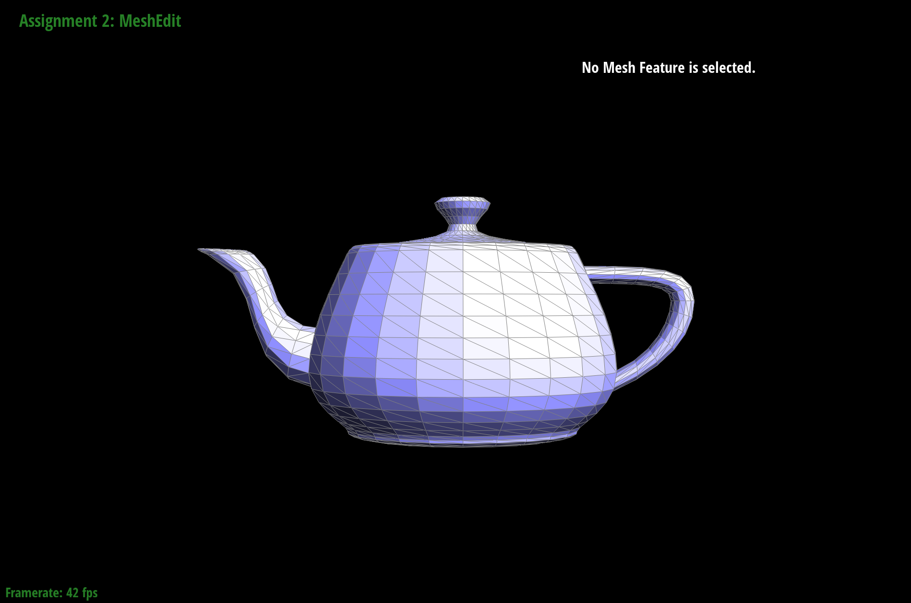
Original teapot
|
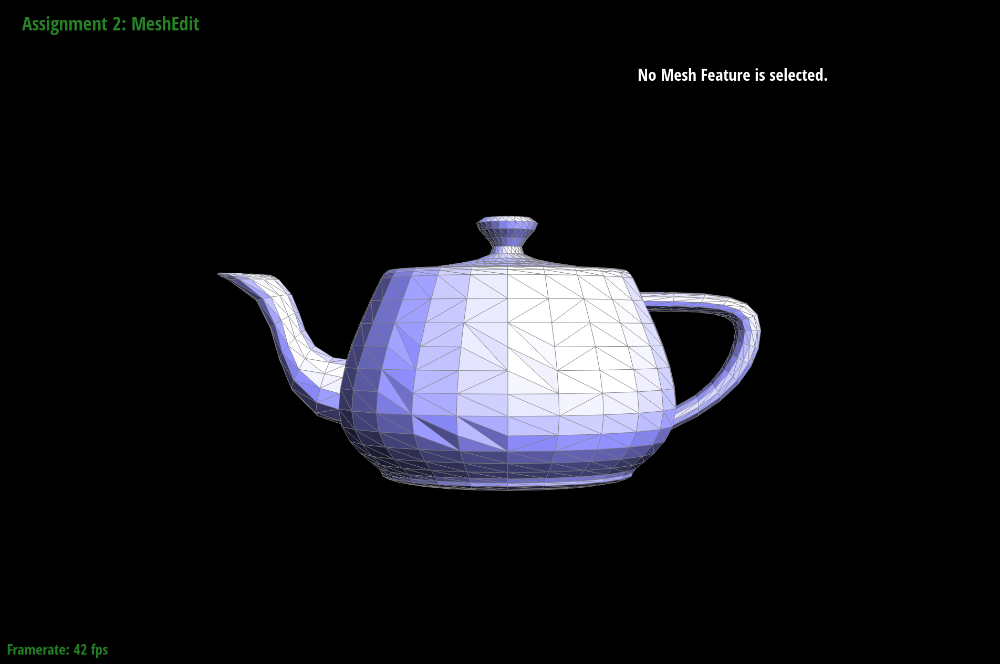
Teapot with flipped edges
|
Part 5: Edge Split
Briefly explain how you implemented the edge split operation and describe any interesting implementation / debugging tricks you have used.
- Retrieve the 2 adjacent faces to the edge, and return the original edge if either of the 2 adjacent faces are on the boundary.
- Via mesh traversal, retrieve the 6 half edges around the 2 triangles, the 4 vertices, and 4 remaining edges.
- Create the new elements required for the edge split: 1 new vertex, 2 new faces, 3 new edges, 6 new halfedges.
- For each element (halfedge, edge, vertice, face), reassign the respective pointers of the data structure to point to the correct element after edge flip.
- Assign the position of the newly created vertex to the midpoint of the split edge.
- Return the iterator to the newly created vertex.
Show screenshots of a mesh before and after some edge splits.
|
Original teapot
|
Teapot with split edges
|
Show screenshots of a mesh before and after a combination of both edge splits and edge flips.
|
Original teapot
|
Teapot with split and flipped edges
|
Part 6: Loop Subdivision for Mesh Upsampling
Briefly explain how you implemented the loop subdivision and describe any interesting implementation / debugging tricks you have used.
- Compute all the new positions for the old vertices in the mesh. This was done by traversing through all vertices in the mesh, then determining all the neighbouring vertices. Following which, the sum of all neighbouring vertices were computed. The formula (1 - n * u) * original_position + u * original_neighbor_position_sum was then applied to determine the updated position of the old vertex.
- Compute all the new positions for new vertices. This was done by traversing through all edges in the mesh, determining the 4 immediate vertices surrounding the edge and applying the formula 3/8 * (A + B) + 1/8 * (C + D) to determine the position of the new vertex. As the new vertex is yet to be created, we store the position of the new vertex in the traversed edge.
- Traverse through all edges in the mesh, and split all the edges. Apply the updated position to the newly created vertex.
- Traverse through all edges in the mesh, and flip any new edge that connects an old and new vertex.
- Traverse through all vertices in the mesh, and update their individual positions.
Take some notes, as well as some screenshots, of your observations on how meshes behave after loop subdivision. What happens to sharp corners and edges? Can you reduce this effect by pre-splitting some edges?
|
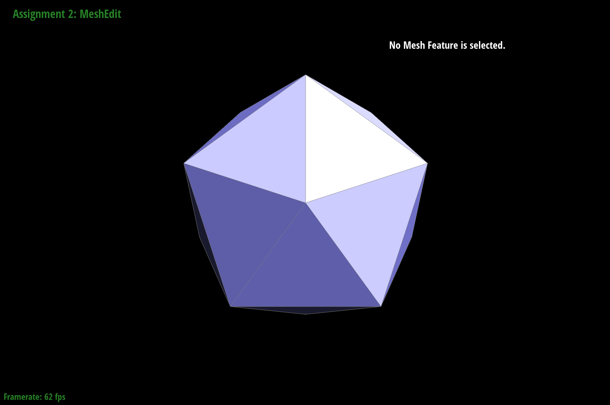
Original icosahedron figure
|
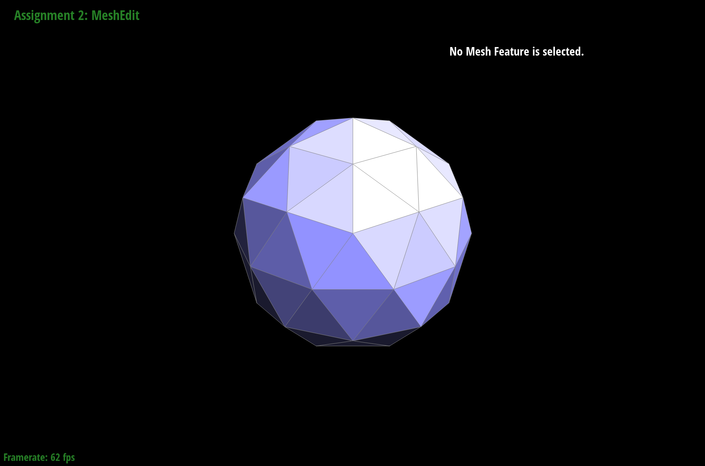
Icosahedron after 1 round of loop subdivision
|
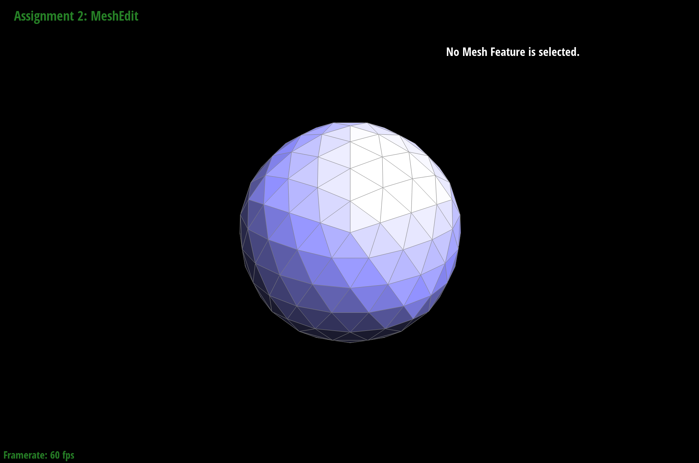
Icosahedron after 2 rounds of loop subdivision
|
The sharp edges / corners of the shape are smoothened out.
Pre-splitting edges do not help with reducing the smoothening effect of loop subdivision.
Load dae/cube.dae. Perform several iterations of loop subdivision on the cube. Notice that the cube becomes slightly asymmetric after repeated subdivisions. Can you pre-process the cube with edge flips and splits so that the cube subdivides symmetrically? Document these effects and explain why they occur. Also explain how your pre-processing helps alleviate the effects.
|
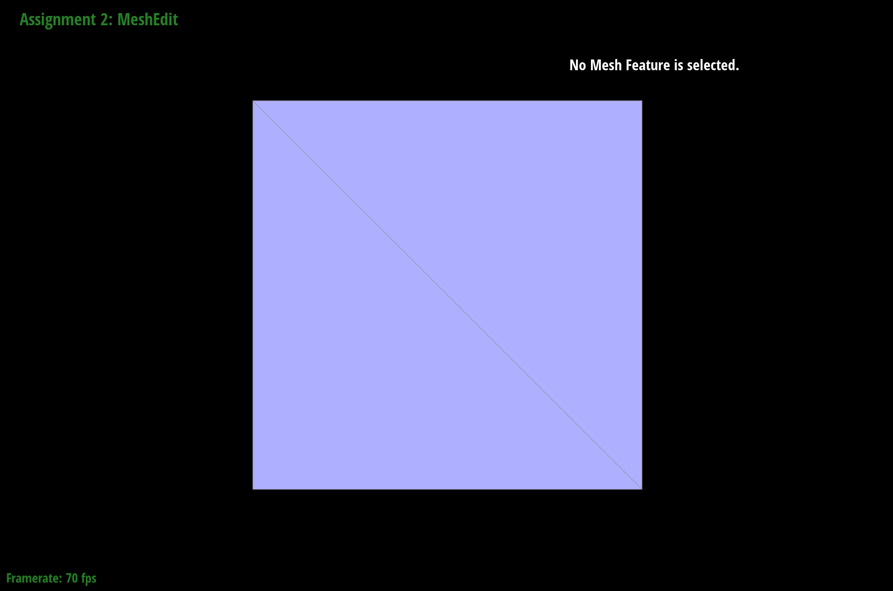
Original cube figure
|
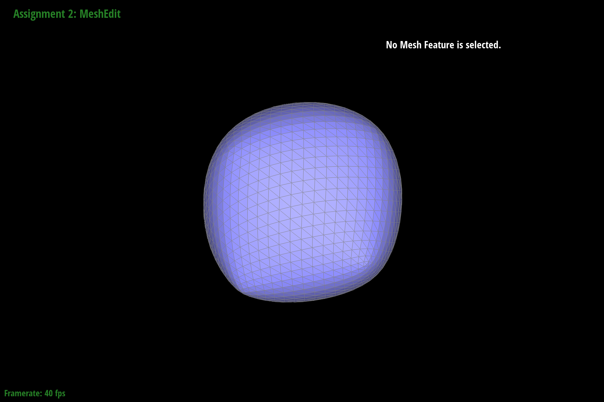
Cube figure after a few rounds of loop subdivision
|
Indeed, the cube becomes slightly asymmetric after repeated subdivisions.
|
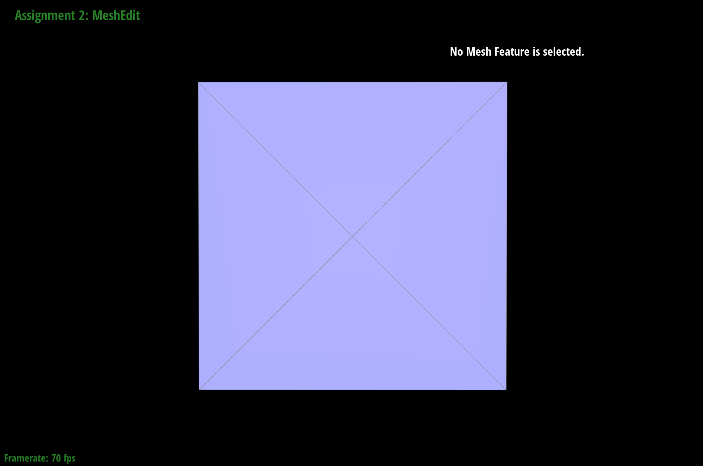
Pre-processed cube before loop subdivision
|
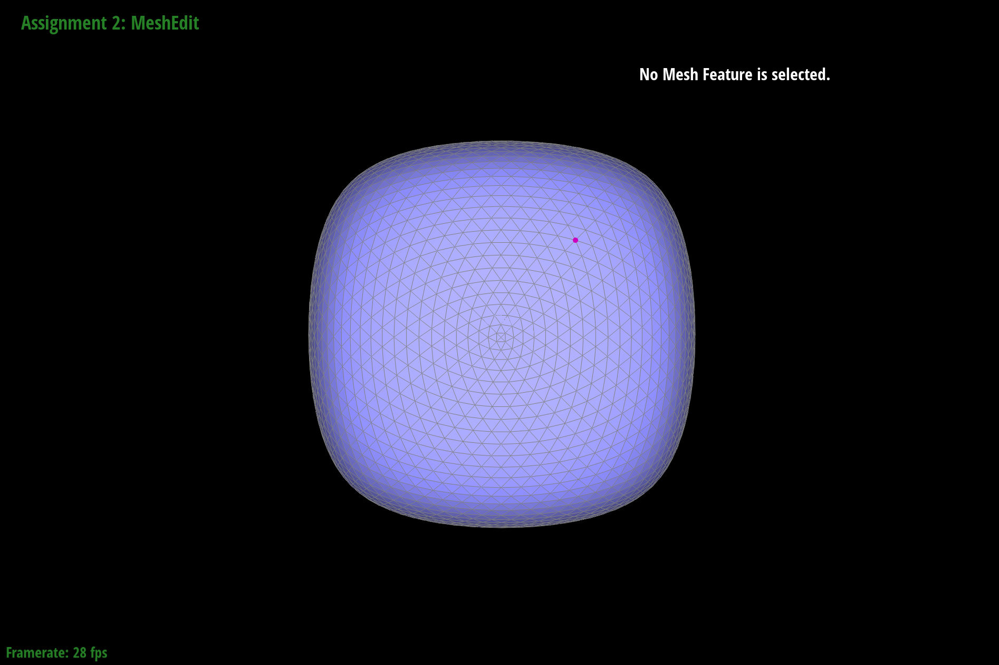
Pre-processed cube after loop subdivision
|
The cube was pre-processed by splitting the edges such that each side of the cube is evenly split symmetrically into 4 triangles, instead of the asymmetric 2 triangles initially. This pre-processing was successful in generating a symmetric cube after loop subdivision. The pre-processing eliminated asymmetry in the original mesh, as all edges of the mesh have a corresponding symmetric twin. Hence, the loop subdivision algorithm will symmetrically divide the triangles of the mesh, alleviating the asymmetry in the original mesh.